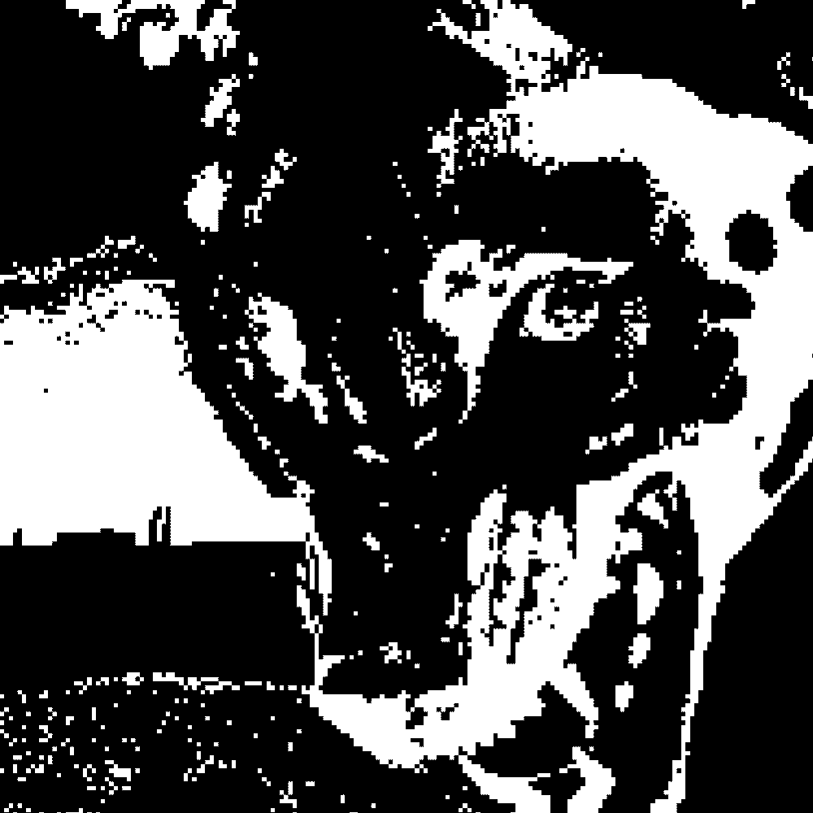
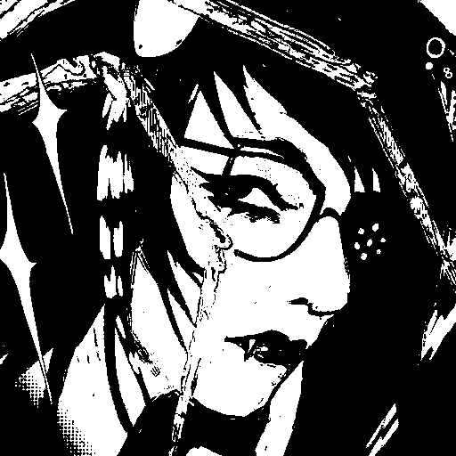

//RUNNING THOUGHTPROCESSES\\

:: [SPIRITUALITY, DELUDE, CHAOS] ::
::EXPLICIT PURPOSE::
'recollection';'psychotic thoughtform state'
::INHERITED CONTEXT::
'a grandiose split of The HABIT that takes the initiative in isolative spiritual acts that sets it apart from what it deems a DULL world.'
::ANALYSIS::
'high separation';'high personal desire'
'its [[DISSOCIATION, PERMAPSYCHOSIS]] seems to operate as a protective factor. lives "aside" reality and doesnt seem to take things with the upmost seriousness if they dont pertain to the idea of reality that it has crafted for itself.''

:: [CONFIDENCE, CONNIVING, PLAYFUL] ::
::EXPLICIT PURPOSE::
'recollection';'bitchy girlbeast state'
::INHERITED CONTEXT::
'psychosis split [2/2], confident and grounded in reality and identity.'
::ANALYSIS::
'medium separation';'low personal desire'
'low activity, high influence. only appears when 'activated' by either internal factors or adapting to outside environments. seems to hold more narcy headspaces - grandiose without complete delusion, I guess.''